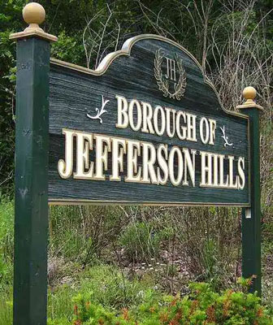
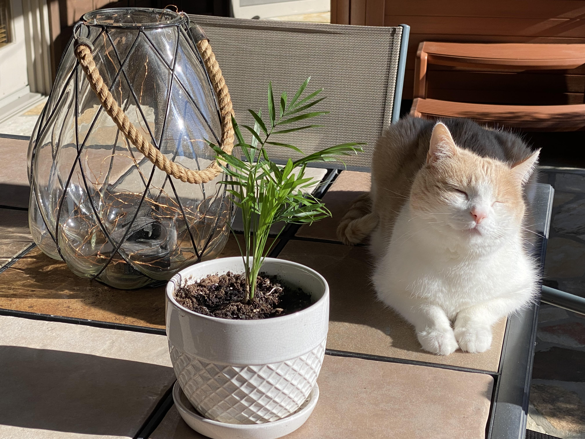

Will Morano is from Jefferson Hills, a medium sized town in the suburbs of Pittsburgh. He said he feels pretty neutral about it. Before our interview Will seemed like a pretty neutral guy, in a good way but he’s actually a pretty neutral guy in a cool and unexpected way. He doesn't get irrational or easily upset and he approaches obstacles in a cool and level-headed manner. If I had to choose one color that would best describe Will, it would be blue, which is coincidentally his favorite color: a calming deep blue. Will is a computer science major. Once he graduates his dream job is to work at a large tech company as a software engineer. He’s really hard-working, probably more hardworking than he probably gets credit for. His parents taught him to be kind, respectful and polite, which is something he’s grateful for. Interviewing Will was a really pleasant experience. I got to learn so many new and even unexpected things about him. Each time I asked him a question, it prompted quiet contemplation and a thoughtful answer, no matter how ridiculous my question was which I really appreciated. |
|
| d d d d eerererer dddddddd ddddddddddd v | |
|  Will's hometown. It's a relativley short drive from Pittsburgh. |
 Will's cat Mittens. |
 Can you guess what Will's least favorite food is? |